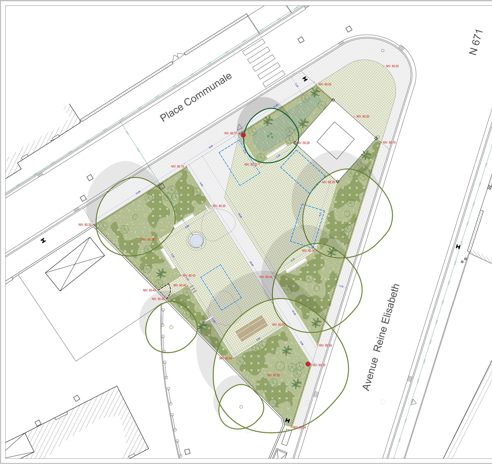

Portfolio — Bachelier en architecture des jardins et du paysage
Thomas Cossement
Construire avec le vivant : vers un urbanisme guidé par le paysage.
01
Sélection
Deux projets pour donner le ton — un concours, et un premier travail en agence. Les quatre sont dans l'index.

Biomimétisme & concours — Arc-et-Senans
Effet Morpho
Un jardin qui change de couleur au pas du visiteur, comme l'aile du papillon dont il tire son nom.
Voir le projet →
Projet en agence — Haccourt (Oupeye)
Place bioclimatique
Végétaliser et désimperméabiliser une place communale — plans d'avant-projet dessinés chez Atelier CUP.
Voir le projet →